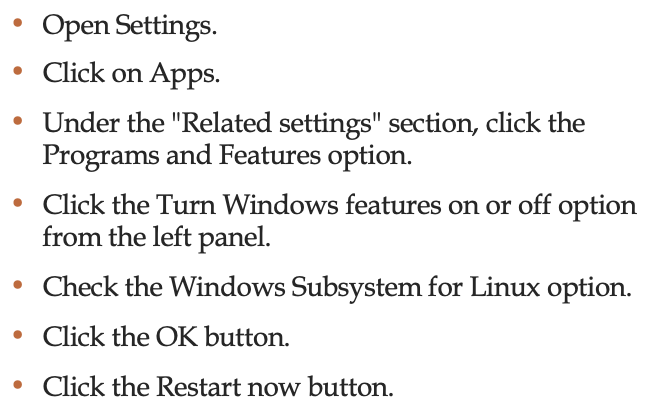

5th
gem5 Introduction
gem5 is a modular discrete event driven computer system simulator platform
- gem5’s components can be rearranged, parameterized, extended or replaced easily to suit your needs
- It simulates the passing of time as a series of discrete events.
- Its intended use is to simulate one or more computer systems in various ways.
- It’s more than just a simulator; it’s a simulator platform that lets you use as many of its premade components as you want to build up your own simulation system.
gem5 is written primarily in C++ and python and most components are provided under a BSD style license. It can simulate a complete system with devices and an operating system in full system mode (FS mode), or user space only programs where system services are provided directly by the simulator in syscall emulation mode (SE mode).
There are varying levels of support for executing Alpha, ARM, MIPS, Power, SPARC, RISC-V, and 64 bit x86 binaries on CPU models including two simple single CPI models, an out of order model, and an in order pipelined model.
A memory system can be flexibly built out of caches and crossbars or the Ruby simulator which provides even more flexible memory system modeling.
Lab’s objectives
gem5 introduction
gem5 installation step-by-step
Installing Windows subsystem for Linux
gem5 must be built on a Unix platform. Linux is tested on every commit, and some people have been able to use MacOS as well, though it is not regularly tested.
Windows Subsystem for Linux allows you to use Ubuntu Terminal and run Ubuntu command line utilize including bash, ssh, git, apt, and many more.
However, it is strongly suggested to not try to compile gem5 when running on a virtual machine. When running with a VM on a laptop gem5 can take over an hour just to compile.
If you want to run distros of Linux on Windows 10, you must first enable the Windows Subsystem for Linux (WSL) feature before you can download and install the flavor of Linux that you want to use.
Installing WSL using setting on Windows 10, use these steps:



Building gem5


Running your benchmark on gem5


Motivation for Serial communication
Connect different systems together
- two embedded systems
- a desktop and an embedded system
Connect different chips together in the same embedded system
- MCU to peripheral
- MCU to MCU
Without using a lot of I/O lines
- I/O lines require I/O pads which cost and size
- I/O lines requires PCB area which costs and size
- Often at relatively low data rates